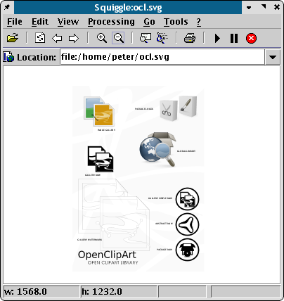

Batik ist eigentlich eine Sammlung von Apache-XML-Modulen zum Export bzw. der Umwandlung von SVG-Dateien. Eines der wirklich nützlichen Werkzeuge in dieser Sammlung ist Squiggle, eine Java-Anwendung zum Betrachten von SVG-Dateien. Nach meinen Erfahrungen ist dieses Programm auf einigen Distributionen schwer zu kompilieren, weshalb ich hoffe, daß Ihre Distribution ein vorkompiliertes Paket enthält.
Warum sollte man sich damit beschäftigen? Sie können Squiggle als den unabhängigen SVG-Richter bezeichnen. Unter all den verschiedenen SVG-Betrachtern ist es einer, wenig nicht gar der einzige, der die Spezifikation korrekt umsetzt. Wenn Sie eine SVG-Datei erzeugen oder erhalten und diese sich nicht importieren läßt, probieren Sie, wie diese in Batik aussieht. Wenn sie nicht richtig dargestellt wird, liegt das Problem wahrscheinlich bei dem Programm, das die Datei erzeugt hat. Eine Ausnahme bilden SVG-Dateien, die Adobe Illustrator exportiert hat. Illustrator speichert häufig eigene Erweiterungen in einer Datei, so daß diese nur in Adobe-Programmen richtig dargestellt werden. Wie man so sagt: die Geschmäcker sind verschieden.
|  |